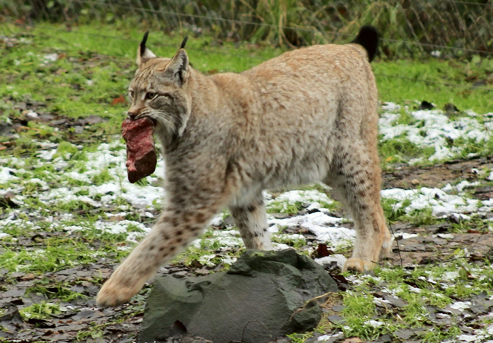

Lodjuret
Lodjur är skygga, ensamlevande skogsdjur som trivs särskilt bra i bergig och brant terräng. De håller revir, områden som de försvarar mot andra lodjur. Reviret ”doftas in” med urinmarkeringar. Ett lodjurs hemområde varierar mellan 3 och 7 kvadratmil, större i norra Sverige än i Bergslagen, och större för hannar än för honor. Det viktigaste bytesdjuret är rådjur, men lodjuret anpassar sina matvanor efter tillgången. I renskötselområdena äter det mest renar, särskilt under vintern. I områden med lite rådjur är harar och skogshöns (tjäder, ripa, orre) vanliga byten.
Ett lodjur som jagar smyger försiktigt fram mot bytet. När avståndet är 20 till 30 m attackerar det blixtsnabbt. Större byten dödas med ett bett i strupen, mindre med ett bett i nacken. Om anfallet misslyckas ger lodjuret snart upp jakten, och väntar istället på nästa chans.